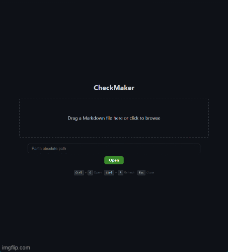

PRESERVE THE FILE
Find [ ], seek to that offset, write the marker. Encoding, line endings, and surrounding content are left alone.
Check boxes. Touch nothing else. A surgical Markdown checklist editor for people who care about predictable files and tiny diffs.
The Windows release is a standalone CheckMaker.exe from the GitHub V1.0.0 tag. No installer and no Python required to run the published build.
Most Markdown editors treat a checkbox toggle as a document rewrite: parse, modify, then save the whole file. That can change line endings, encoding, or surrounding formatting. CheckMaker seeks the exact checkbox bytes and writes only those markers. It is a shipped AEOWUN product, alongside AEOPIN—not a side utility.
This is the demo from the public CheckMaker repository. The viewer renders Markdown; a checkbox click writes only the marker on disk.

Find [ ], seek to that offset, write the marker. Encoding, line endings, and surrounding content are left alone.
Before a write, CheckMaker verifies the file has not changed externally and that a checkbox marker is actually present at the target bytes.
Assets are bundled locally. The standalone Windows build runs without an internet connection.
Open and switch between multiple documents in one session. Tab IDs are UUID-based so actions stay attached to the correct file.
Drag-and-drop, native file picker, or paste a path. Recent files remember the last 10 documents.
Because only the checkbox bytes change, Git diffs stay a single marker instead of a rewritten document.
MARKDOWN FILE ↓ MARKDOWN RENDERER ↓ NATIVE WEBVIEW VIEWER ↓ CHECKBOX CLICK ↓ BINARY BYTE SEEK + WRITE ↓ SAME FILE
Viewing is separated from modification. If CheckMaker cannot prove a write is safe, it refuses to write. Configuration history is written atomically; IO uses fsync so the change is flushed to storage.
CheckMaker is a surgical checklist editor. It is not a WYSIWYG authoring environment and not a replacement for VS Code or Obsidian. GFM-style task items are recognized, including nested lists. Tab reordering and in-file search are listed as unfinished in the public roadmap.
Download CheckMaker.exe from the V1.0.0 GitHub release, or run from source with Python 3. Source, PyInstaller spec, and build script are public under github.com/Aeowun/Checkmaker.